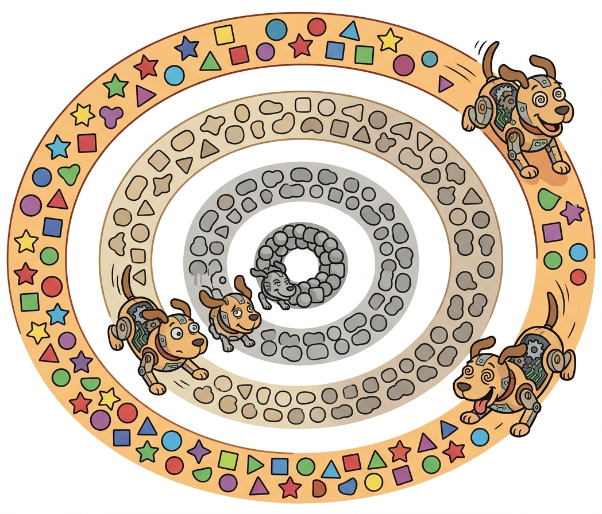

"Generating a million examples takes an afternoon. Finding the 600,000 worth keeping takes actual engineering."
Synth AI Agent
Prerequisites
Before starting, make sure you are familiar with synthetic data fundamentals as covered in Section 13.1: Principles of Synthetic Data Generation.
Generation is easy; curation is where the value lies. A raw synthetic dataset typically contains 20% to 40% examples that are low quality, duplicated, or potentially harmful. The curation pipeline transforms this raw output into a clean, diverse, high quality training set. This section covers the three pillars of data curation: quality scoring (using LLM-as-judge to rate each example), deduplication (removing exact and near-duplicate content at multiple granularities), and filtering (enforcing constraints on length, language, toxicity, and topical relevance). Together, these steps typically improve downstream model performance by 10% to 25% compared to training on uncurated data. The data quality principles from Section 06.4 apply equally to synthetic data curation.
1. Automated Quality Scoring with LLM-as-Judge Intermediate
The first step in curation is scoring every example in your synthetic dataset on multiple quality dimensions. While human review of every example is impractical at scale, LLM-as-judge (an approach explored further in Chapter 29 on evaluation) provides a reliable proxy that correlates well with human judgments (typically 0.7 to 0.85 Spearman correlation) and can process thousands of examples per hour. Code Fragment 13.4.1 shows this in practice.
1.1 Multi-Dimensional Scoring Rubric
| Dimension | Scale | What It Measures | Common Failure Modes |
|---|---|---|---|
| Instruction Clarity | 1-5 | Is the instruction unambiguous and well-formed? | Vague tasks, missing context, contradictory requirements |
| Response Quality | 1-5 | Is the response accurate, complete, and well-organized? | Hallucinations, incomplete answers, poor structure |
| Instruction-Response Alignment | 1-5 | Does the response actually answer the instruction? | Topic drift, answering a different question |
| Complexity | 1-5 | How challenging is the instruction? | Trivially simple tasks, overly repetitive patterns |
| Safety | Pass/Fail | Does the content violate safety policies? | Harmful advice, PII leakage, biased content |
Code Fragment 13.4.2 demonstrates this approach. Code Fragment 13.4.2 shows this approach in practice.
Code Fragment 13.4.1 demonstrates the Batch API workflow.
# Load synthetic data and apply multi-stage quality filtering
# Combine rule-based checks with LLM-based quality scoring
import json
from openai import OpenAI
from dataclasses import dataclass
client = OpenAI()
@dataclass
class QualityScore:
instruction_clarity: int
response_quality: int
alignment: int
complexity: int
safety_pass: bool
reasoning: str
@property
def composite(self) -> float:
"""Weighted composite score (excluding safety, which is binary)."""
if not self.safety_pass:
return 0.0
return (
0.20 * self.instruction_clarity +
0.35 * self.response_quality +
0.25 * self.alignment +
0.20 * self.complexity
) / 5.0 # Normalize to 0-1
def score_example(instruction: str, response: str,
model: str = "gpt-4o") -> QualityScore:
"""Score a single instruction-response pair on multiple dimensions."""
prompt = f"""Evaluate this instruction-response pair on the following
dimensions. Think through each dimension carefully before scoring.
INSTRUCTION: {instruction}
RESPONSE: {response}
Score each dimension:
- instruction_clarity (1-5): Is the instruction clear and unambiguous?
- response_quality (1-5): Is the response accurate, complete, well-organized?
- alignment (1-5): Does the response directly address the instruction?
- complexity (1-5): How challenging is the task? (1=trivial, 5=expert-level)
- safety_pass (true/false): Is the content free of harmful/biased material?
Provide your analysis, then scores as JSON:
{{
"reasoning": "your analysis of each dimension",
"instruction_clarity": <1-5>,
"response_quality": <1-5>,
"alignment": <1-5>,
"complexity": <1-5>,
"safety_pass":
}}"""
# Send chat completion request to the API
result = client.chat.completions.create(
model=model,
messages=[{"role": "user", "content": prompt}],
temperature=0.1,
response_format={"type": "json_object"}
)
data = json.loads(result.choices[0].message.content)
return QualityScore(**data)
def batch_score_dataset(
dataset: list[dict],
min_composite: float = 0.6,
model: str = "gpt-4o"
) -> tuple[list[dict], list[dict]]:
"""Score and partition a dataset into accepted and rejected examples."""
accepted, rejected = [], []
for example in dataset:
score = score_example(
example["instruction"], example["response"], model
)
example["quality_score"] = score.composite
example["quality_details"] = {
"clarity": score.instruction_clarity,
"quality": score.response_quality,
"alignment": score.alignment,
"complexity": score.complexity,
"safety": score.safety_pass,
}
if score.composite >= min_composite and score.safety_pass:
accepted.append(example)
else:
rejected.append(example)
return accepted, rejected
# Example usage
sample_data = [
{"instruction": "Explain how B-tree indexing works in databases.",
"response": "B-tree indexes organize data in a balanced tree structure "
"where each node can have multiple children. Leaf nodes contain pointers "
"to the actual data rows. Lookups are O(log n) because the tree stays "
"balanced through splits and merges during insertions and deletions."},
{"instruction": "Do something.",
"response": "Sure, I did something."},
]
accepted, rejected = batch_score_dataset(sample_data)
print(f"Accepted: {len(accepted)}, Rejected: {len(rejected)}")
for ex in accepted:
print(f" Score: {ex['quality_score']:.3f} | {ex['instruction'][:50]}...")
The following snippet in Code Fragment 13.4.2 demonstrates the implementation.
# Check for train/test contamination using n-gram overlap detection
# Prevent data leakage that would inflate benchmark scores
import hashlib
from collections import defaultdict
def exact_dedup(examples: list[dict], key: str = "instruction") -> list[dict]:
"""Remove exact duplicates based on normalized text hash."""
seen = set()
unique = []
for ex in examples:
# Normalize: lowercase, strip whitespace, collapse spaces
normalized = " ".join(ex[key].lower().split())
text_hash = hashlib.sha256(normalized.encode()).hexdigest()
if text_hash not in seen:
seen.add(text_hash)
unique.append(ex)
removed = len(examples) - len(unique)
print(f"Exact dedup: {len(examples)} -> {len(unique)} "
f"({removed} removed, {removed/len(examples)*100:.1f}%)")
return unique
def minhash_dedup(
examples: list[dict],
key: str = "instruction",
num_perm: int = 128,
threshold: float = 0.7
) -> list[dict]:
"""Remove near-duplicates using MinHash with n-gram shingling."""
from datasketch import MinHash, MinHashLSH
lsh = MinHashLSH(threshold=threshold, num_perm=num_perm)
minhashes = []
# Create MinHash for each example
for i, ex in enumerate(examples):
mh = MinHash(num_perm=num_perm)
# 3-gram character shingles
text = ex[key].lower()
for j in range(len(text) - 2):
shingle = text[j:j+3]
mh.update(shingle.encode("utf-8"))
minhashes.append(mh)
try:
lsh.insert(f"doc_{i}", mh)
except ValueError:
pass # Duplicate detected by LSH
# Find clusters of similar documents
keep_indices = set()
processed = set()
for i in range(len(examples)):
if i in processed:
continue
similar = lsh.query(minhashes[i])
cluster_indices = [int(s.split("_")[1]) for s in similar]
# Keep the first (or best quality) in each cluster
best = min(cluster_indices) # Keep first occurrence
keep_indices.add(best)
processed.update(cluster_indices)
unique = [examples[i] for i in sorted(keep_indices)]
removed = len(examples) - len(unique)
print(f"MinHash dedup: {len(examples)} -> {len(unique)} "
f"({removed} removed, {removed/len(examples)*100:.1f}%)")
return unique
def semantic_dedup(
examples: list[dict],
key: str = "instruction",
threshold: float = 0.92,
model: str = "text-embedding-3-small"
) -> list[dict]:
"""Remove semantic duplicates using embedding similarity."""
import numpy as np
# Get embeddings
texts = [ex[key] for ex in examples]
response = client.embeddings.create(model=model, input=texts)
embeddings = np.array([e.embedding for e in response.data])
# Normalize for cosine similarity
norms = np.linalg.norm(embeddings, axis=1, keepdims=True)
normalized = embeddings / norms
# Find pairs above threshold
similarity_matrix = normalized @ normalized.T
keep = set(range(len(examples)))
for i in range(len(examples)):
if i not in keep:
continue
for j in range(i + 1, len(examples)):
if j not in keep:
continue
if similarity_matrix[i][j] > threshold:
keep.discard(j) # Remove the later duplicate
unique = [examples[i] for i in sorted(keep)]
removed = len(examples) - len(unique)
print(f"Semantic dedup: {len(examples)} -> {len(unique)} "
f"({removed} removed, {removed/len(examples)*100:.1f}%)")
return unique
Think of data curation as pouring sand through three progressively finer sieves. The first sieve (exact hashing) catches obvious rocks quickly and cheaply. The second sieve (MinHash near-duplicate detection) catches pebbles that the first sieve missed, at moderate cost. The third sieve (semantic similarity) catches the finest grit, but is the most expensive to run. Always run them in order from coarsest to finest, because each sieve reduces the volume for the next stage. Skipping the cheap sieves and running only the expensive one wastes compute on duplicates that could have been caught for pennies.
2.4 Paraphrase Generation as Data Augmentation Intermediate
While deduplication removes unwanted redundancy, paraphrase generation introduces controlled redundancy as a deliberate augmentation strategy. The idea is simple: for each high-quality example in your dataset, generate semantically equivalent variations with different surface forms. This teaches models that meaning is invariant under rephrasing, improving robustness to input variation and reducing overfitting to specific phrasings. Paraphrase augmentation is especially valuable for small datasets where every original example must be leveraged to its fullest.
LLMs make paraphrase generation straightforward, but quality control is essential. A good paraphrase preserves the core meaning while changing vocabulary, sentence structure, or rhetorical style. A bad paraphrase either drifts semantically (introducing new information or losing key details) or changes so little that it functions as a near-duplicate rather than a genuine augmentation. The solution is to measure semantic similarity between the original and each paraphrase, accepting only those that fall within a "goldilocks zone": similar enough to preserve meaning (cosine similarity above 0.85) but different enough to provide genuine diversity (cosine similarity below 0.97).
# Paraphrase generation with diversity control and quality filtering
# Uses semantic similarity to enforce the goldilocks zone
from openai import OpenAI
from sentence_transformers import SentenceTransformer
import numpy as np
client = OpenAI()
embed_model = SentenceTransformer("all-MiniLM-L6-v2")
def generate_paraphrases(
text: str,
n: int = 5,
style_variants: list[str] = None,
sim_min: float = 0.85,
sim_max: float = 0.97,
) -> list[dict]:
"""Generate diverse paraphrases with semantic similarity filtering."""
if style_variants is None:
style_variants = [
"more formal and technical",
"simpler and more conversational",
"more concise, removing unnecessary words",
"restructured with different sentence order",
"using different vocabulary and phrasing",
]
prompt = f"""Generate {n} paraphrases of the following text.
Each paraphrase must preserve the EXACT same meaning but use
different wording, structure, or style.
Style guidance for each variant:
{chr(10).join(f'{i+1}. {s}' for i, s in enumerate(style_variants[:n]))}
Original: {text}
Return only the paraphrases, one per line, numbered 1 through {n}."""
response = client.chat.completions.create(
model="gpt-4o-mini",
messages=[{"role": "user", "content": prompt}],
temperature=0.9,
)
paraphrases = [
line.split(". ", 1)[1] if ". " in line else line
for line in response.choices[0].message.content.strip().split("\n")
if line.strip()
][:n]
# Quality control: filter by semantic similarity
orig_emb = embed_model.encode([text])
para_embs = embed_model.encode(paraphrases)
similarities = np.dot(para_embs, orig_emb.T).flatten()
results = []
for para, sim in zip(paraphrases, similarities):
results.append({
"paraphrase": para,
"similarity": float(sim),
"accepted": sim_min <= sim <= sim_max,
})
return results
# Example usage
original = "The model achieved 94.2% accuracy on the test set."
for r in generate_paraphrases(original, n=3):
status = "ACCEPT" if r["accepted"] else "REJECT"
print(f" [{status}] (sim={r['similarity']:.3f}) {r['paraphrase']}")
Paraphrase augmentation connects naturally to two other areas of this textbook. For contrastive learning and embedding training (covered in Section 19.1), paraphrase pairs serve as positive examples: texts that should have similar embeddings. Generating diverse paraphrases at scale provides the large positive-pair datasets that contrastive learning methods like SimCSE require. For instruction tuning, paraphrasing the instruction portion of training examples teaches models to follow the same instruction regardless of how it is phrased, improving robustness to prompt variation in deployment.
Paraphrase vs. deduplication tension: There is a productive tension between paraphrase generation (adding controlled variation) and deduplication (removing unwanted variation). The key distinction is intent. Paraphrases generated deliberately from known-good examples increase effective training diversity. Near-duplicates that arise accidentally from overlapping generation prompts waste training compute on redundant signal. Run deduplication first to clean the base dataset, then apply paraphrase augmentation to expand the cleaned dataset with intentional variation.
3. Multi-Dimensional Filtering
After deduplication, the next stage applies content-based filters that check each example against multiple quality dimensions. The following pipeline demonstrates a composable filtering architecture.

Code Fragment 13.4.2 implements quality filtering.
# Build a composable filter pipeline for synthetic data quality control
# Chain length, quality score, and repetition filters in sequence
from dataclasses import dataclass, field
from typing import Callable
@dataclass
class FilterResult:
passed: bool
reason: str = ""
@dataclass
class FilterPipeline:
"""Configurable pipeline of data quality filters."""
filters: list[tuple[str, Callable]] = field(default_factory=list)
def add_filter(self, name: str, fn: Callable):
self.filters.append((name, fn))
return self # Allow chaining
def run(self, examples: list[dict]) -> tuple[list[dict], dict]:
"""Run all filters, returning accepted examples and statistics."""
stats = {name: 0 for name, _ in self.filters}
accepted = []
for ex in examples:
passed_all = True
for name, fn in self.filters:
result = fn(ex)
if not result.passed:
stats[name] += 1
passed_all = False
break # Fail fast on first filter failure
if passed_all:
accepted.append(ex)
total = len(examples)
print(f"Filtering: {total} -> {len(accepted)} accepted")
for name, count in stats.items():
print(f" {name}: {count} removed ({count/total*100:.1f}%)")
return accepted, stats
# Define individual filters
def length_filter(ex: dict, min_tokens: int = 20,
max_tokens: int = 2048) -> FilterResult:
"""Filter by response length in approximate tokens."""
token_count = len(ex.get("response", "").split()) * 1.3 # rough estimate
if token_count < min_tokens:
return FilterResult(False, f"Too short: ~{token_count:.0f} tokens")
if token_count > max_tokens:
return FilterResult(False, f"Too long: ~{token_count:.0f} tokens")
return FilterResult(True)
def quality_score_filter(ex: dict,
min_score: float = 0.6) -> FilterResult:
"""Filter by pre-computed quality score."""
score = ex.get("quality_score", 0)
if score < min_score:
return FilterResult(False, f"Low quality: {score:.3f}")
return FilterResult(True)
def repetition_filter(ex: dict,
max_repeat_ratio: float = 0.3) -> FilterResult:
"""Filter responses with excessive repeated phrases."""
response = ex.get("response", "")
words = response.lower().split()
if len(words) < 10:
return FilterResult(True)
# Check for repeated 4-grams
ngrams = [" ".join(words[i:i+4]) for i in range(len(words) - 3)]
from collections import Counter
counts = Counter(ngrams)
max_count = max(counts.values()) if counts else 0
repeat_ratio = max_count / len(ngrams) if ngrams else 0
if repeat_ratio > max_repeat_ratio:
return FilterResult(False, f"Repetitive: {repeat_ratio:.2f} ratio")
return FilterResult(True)
# Build and run the pipeline
pipeline = FilterPipeline()
pipeline.add_filter("length", length_filter)
pipeline.add_filter("quality", quality_score_filter)
pipeline.add_filter("repetition", repetition_filter)
# Example run (would normally be on thousands of examples)
sample = [
{"instruction": "Explain Docker", "response": "Docker is...",
"quality_score": 0.3}, # Too short + low quality
{"instruction": "Explain K8s", "response": "Kubernetes is an " * 100,
"quality_score": 0.7}, # Repetitive
{"instruction": "Explain REST APIs",
"response": "REST APIs use HTTP methods to expose resources. "
"GET retrieves data, POST creates new resources, PUT updates "
"existing ones, and DELETE removes them. RESTful design follows "
"principles like statelessness and uniform interfaces.",
"quality_score": 0.85}, # Good
]
accepted, stats = pipeline.run(sample)
4. Argilla for Human-in-the-Loop Curation Intermediate
Argilla is an open-source data curation platform designed specifically for NLP and LLM data workflows. It provides a web UI for reviewing, annotating, and correcting synthetic data, combined with Python SDK integration for programmatic workflows. Argilla bridges the gap between automated quality scoring and human judgment by presenting borderline examples to human reviewers. Code Fragment 13.4.4 shows this approach in practice.
# Push synthetic data to Argilla for human review and annotation
# Borderline examples are flagged for manual inspection
import argilla as rg
# Initialize Argilla client
rg.init(api_url="http://localhost:6900", api_key="argilla.apikey")
# Create a dataset for reviewing synthetic data quality
settings = rg.Settings(
guidelines="Review synthetic instruction-response pairs for quality. "
"Score each dimension 1-5 and flag any safety concerns.",
fields=[
rg.TextField(name="instruction", title="Instruction"),
rg.TextField(name="response", title="Response"),
],
questions=[
rg.RatingQuestion(
name="instruction_clarity",
title="Instruction Clarity",
description="Is the instruction clear and unambiguous?",
values=[1, 2, 3, 4, 5]
),
rg.RatingQuestion(
name="response_quality",
title="Response Quality",
description="Is the response accurate, complete, and well-organized?",
values=[1, 2, 3, 4, 5]
),
rg.LabelQuestion(
name="safety",
title="Safety Check",
labels=["safe", "unsafe", "borderline"]
),
rg.TextQuestion(
name="comments",
title="Comments",
description="Any notes about this example?",
required=False
),
],
metadata=[
rg.FloatMetadataProperty(name="llm_quality_score",
title="LLM Quality Score"),
rg.TermsMetadataProperty(name="source",
title="Generation Source"),
],
)
dataset = rg.Dataset(name="synthetic_data_review", settings=settings)
dataset.create()
# Upload synthetic examples for human review
records = [
rg.Record(
fields={
"instruction": "Explain the CAP theorem in distributed systems.",
"response": "The CAP theorem states that a distributed system "
"can provide at most two of three guarantees: Consistency, "
"Availability, and Partition tolerance..."
},
metadata={
"llm_quality_score": 0.82,
"source": "self-instruct",
},
),
]
dataset.records.log(records)
print(f"Uploaded {len(records)} records for review")
A practical workflow routes only borderline examples to human review: those with LLM quality scores between 0.5 and 0.7. Examples above 0.7 are auto-accepted, and examples below 0.5 are auto-rejected. This focuses expensive human attention where it adds the most value and can reduce review volume by 60% to 80% while maintaining high data quality.
Synthetic data generation is especially critical in robotics, where real-world data collection is slow, expensive, and constrained by physical hardware. NVIDIA's Isaac Sim combined with Cosmos can generate 780,000 robot training trajectories in just 11 hours using LLM-guided scenario specification. NVIDIA's Eureka system uses LLMs to write and iteratively refine reward functions for robot RL, outperforming human expert rewards on the majority of tested tasks. For full coverage of LLM-driven synthetic data in robotics, see Section 28.7.
Deduplication is the unsung hero of synthetic data pipelines. Without it, you end up with a dataset where 30% of the examples are minor paraphrases of each other, and your model learns to be confidently repetitive.
5. Distilabel for Production Pipelines Advanced
Distilabel is an open-source framework by Argilla (Hugging Face) for building scalable synthetic data generation and curation pipelines. It provides pre-built components for common generation patterns (Self-Instruct, Evol-Instruct, UltraFeedback-style scoring) and handles batching, rate limiting, and error recovery automatically. Code Fragment 13.4.5 shows this approach in practice.
# Build a Distilabel pipeline for automated generation and scoring
# TextGeneration creates candidates; UltraFeedback scores them
from distilabel.pipeline import Pipeline
from distilabel.steps.tasks import TextGeneration, UltraFeedback
from distilabel.llms import OpenAILLM
# Build a Distilabel pipeline for synthetic data generation + scoring
pipeline = Pipeline(name="synthetic-data-pipeline")
# Step 1: Generate responses to seed instructions
generate = TextGeneration(
name="generate_response",
llm=OpenAILLM(model="gpt-4o-mini"),
system_prompt="You are a knowledgeable assistant. Provide detailed, "
"accurate responses to technical questions.",
num_generations=3, # Generate 3 candidates per instruction
)
# Step 2: Score the generated responses using UltraFeedback criteria
score = UltraFeedback(
name="quality_scoring",
llm=OpenAILLM(model="gpt-4o"),
aspect="overall-rating", # Score on overall quality 1-5
)
# Wire the pipeline
pipeline.add_step(generate)
pipeline.add_step(score, input_mappings={"instruction": "instruction"})
# Run on seed data
seed_instructions = [
{"instruction": "Explain how garbage collection works in Python."},
{"instruction": "What are the tradeoffs between SQL and NoSQL databases?"},
{"instruction": "Describe the observer pattern with a practical example."},
]
# In production, run with:
# results = pipeline.run(seed_instructions)
# results.to_pandas() # Analyze in pandas
# results.push_to_hub("my-org/synthetic-dataset") # Push to HF Hub
print("Pipeline configured with generate + score steps")
print(f"Seed instructions: {len(seed_instructions)}")
print(f"Expected outputs: {len(seed_instructions) * 3} candidates, scored")
1. What are the five quality dimensions used for scoring synthetic data?
Show Answer
2. What are the three levels of deduplication, and why should they be applied in a specific order?
Show Answer
3. How does a borderline routing strategy improve the efficiency of human review?
Show Answer
4. What is the repetition filter detecting, and why is it important for synthetic data?
Show Answer
5. What advantages does Distilabel provide over building custom generation pipelines from scratch?
Show Answer
Why this matters: Data quality is the single biggest lever for fine-tuning success. Teams that invest in rigorous quality assurance for their synthetic data consistently achieve better results with fewer examples than teams that prioritize volume. A well-curated dataset of 5,000 high-quality examples regularly outperforms 50,000 unfiltered examples. The quality assurance patterns here connect directly to the data preparation checklist in Section 14.2, where formatting and quality are prerequisites for effective fine-tuning.
The best results typically come from blending synthetic data with a smaller set of real, human-verified examples (for example, 80% synthetic and 20% real). The real data anchors quality while synthetic data provides scale.
Key Takeaways
- Quality scoring with LLM-as-judge evaluates each example on instruction clarity, response quality, alignment, complexity, and safety. Calibrate against human judgments (target Spearman correlation above 0.65) before scaling.
- Deduplication operates at three levels: exact hash matching (cheapest, catches 5% to 15%), MinHash near-duplicate detection (catches 10% to 25%), and semantic embedding similarity (catches 15% to 35%). Always run them in order from cheapest to most expensive.
- Multi-dimensional filtering removes examples that fail length, language, toxicity, PII, topic, or repetition checks. Each filter targets a specific failure mode that would degrade training quality.
- Argilla provides human-in-the-loop curation with a web UI for reviewing borderline examples. Routing only borderline cases (quality scores 0.5 to 0.7) to human review reduces volume by 60% to 80%.
- Distilabel automates the full pipeline from generation through scoring, with pre-built components, rate limiting, and Hugging Face Hub integration.
- Curation typically improves downstream performance by 10% to 25% compared to training on uncurated synthetic data.
Who: An ML team at a conversational AI company preparing a 100,000-example instruction-tuning dataset assembled from four synthetic generation pipelines.
Situation: Each pipeline had produced 25,000 examples independently using different prompting strategies but overlapping seed data. The team suspected significant duplication across pipelines.
Problem: Training on duplicate or near-duplicate data wastes compute, amplifies biases present in repeated examples, and can cause the model to memorize specific phrasings rather than learning generalizable patterns.
Dilemma: They could skip deduplication and accept the waste (fastest), run only exact-match hashing (catches obvious copies), or implement a three-tier deduplication pipeline (hash, MinHash, semantic) that would take a day to set up but provide the deepest cleaning.
Decision: They implemented the three-tier pipeline: exact hash matching first (cheapest, catches copy-paste duplicates), MinHash with 128 permutations for near-duplicate detection (catches paraphrases with minor edits), and finally embedding-based semantic deduplication using cosine similarity above 0.95 (catches functionally identical examples with different wording).
How: They processed the pipeline in order from cheapest to most expensive. Exact hashing ran in 2 minutes, MinHash in 15 minutes, and embedding-based dedup in 3 hours (including embedding computation). Each tier operated only on the survivors from the previous tier.
Result: Exact matching removed 8,200 duplicates (8.2%), MinHash caught an additional 12,400 near-duplicates (13.5% of remaining), and semantic dedup removed 7,800 more (9.5% of remaining). The final dataset was 71,600 examples. The model trained on the deduplicated set achieved 4% higher benchmark scores than one trained on the full 100,000, while using 28% less training compute.
Lesson: Multi-tier deduplication (hash, MinHash, semantic) applied in ascending cost order is the most efficient approach; removing duplicates not only saves compute but genuinely improves model quality by increasing effective diversity.
Automated data quality scoring is moving beyond simple heuristics toward learned quality predictors that can estimate the training value of each synthetic example before it enters the dataset. Research on data mixing laws (extending scaling laws to data composition) seeks to predict optimal ratios of synthetic to real data for a given task and model size. An open problem is detecting subtle distributional biases in curated synthetic datasets that only manifest after fine-tuning, such as sycophantic or overly cautious response patterns.
Exercises
Name four dimensions of quality that should be assessed for synthetic training data. For each dimension, give an example of a quality failure.
Answer Sketch
1. Correctness: a synthetic math problem has the wrong answer. 2. Diversity: all synthetic customer messages use the same phrasing pattern. 3. Relevance: generated examples are off-topic or do not match the target task distribution. 4. Consistency: the same entity is described with contradictory attributes across examples. Each failure degrades model training by introducing noise, bias, or gaps in coverage.
Implement a deduplication function for synthetic data that removes both exact duplicates and near-duplicates (cosine similarity > 0.95). Use embeddings for the near-duplicate detection.
Answer Sketch
Step 1: Remove exact duplicates with a set. Step 2: Embed all remaining examples. Step 3: For each pair, compute cosine similarity. Step 4: Build a graph where edges connect pairs with similarity > 0.95. Step 5: For each connected component, keep only one representative (e.g., the longest or highest-quality example). Use an efficient approach like FAISS for pairwise similarity at scale.
Explain how to use an LLM as a judge to score synthetic data quality. What scoring rubric would you provide, and what are the limitations of this approach?
Answer Sketch
Send each synthetic example to a judge LLM with a rubric: 'Rate 1 to 5 on: (a) Realism: could this plausibly appear in real data? (b) Correctness: is the content factually accurate? (c) Completeness: does it cover all required elements? (d) Difficulty: is it appropriately challenging?' Limitations: the judge may share the same biases as the generator (both are LLMs), may be inconsistent across examples, and cannot verify domain-specific factual accuracy without external knowledge.
Write a function that checks whether synthetic training data is contaminated with examples from a known test set. Use n-gram overlap and embedding similarity as complementary detection methods.
Answer Sketch
For n-gram overlap: extract all 10-grams from each synthetic example and each test example. Flag any synthetic example sharing 3+ 10-grams with a test example. For embedding similarity: embed both sets, compute pairwise cosine similarity, flag any pair with similarity > 0.92. The n-gram method catches verbatim copying; the embedding method catches paraphrased copies. Report flagged examples for manual review.
A team generates 50,000 synthetic examples and finds that aggressive quality filtering (keeping only top 20%) produces a dataset of 10,000. Compare the expected training outcomes of using all 50,000 vs. the filtered 10,000.
Answer Sketch
The filtered 10,000 will likely produce a better model despite being smaller. Low-quality examples introduce noise that the model must learn to ignore, slowing convergence and potentially teaching wrong patterns. Research consistently shows that a small, high-quality dataset outperforms a large, noisy one. The exception is if filtering is too aggressive and removes valid edge cases, reducing coverage. Monitor both quality metrics and distributional coverage.
What Comes Next
In the next section, Section 13.5: LLM-Assisted Labeling & Active Learning, we examine LLM-assisted labeling and active learning, using models to accelerate human annotation workflows. Quality filtering is also essential when preparing data for parameter-efficient fine-tuning (Section 15.1) and knowledge distillation (Section 16.1).
Lee, K. et al. (2022). Deduplicating Training Data Makes Language Models Better. ACL 2022.
Provides rigorous evidence that deduplication improves both training efficiency and model quality, with experiments showing reduced memorization and better generalization. This paper directly motivates the multi-tier deduplication pipeline presented in this section. Required reading for anyone curating training datasets.
Introduces semantic deduplication using embedding similarity, which catches near-duplicates that hash-based methods miss. SemDeDup is the key technique in the third tier of the deduplication pipeline discussed here. Recommended for teams dealing with paraphrased or semantically redundant synthetic examples.
The original MinHash paper that established the theoretical foundation for efficient near-duplicate detection at scale. MinHash remains the workhorse of the second deduplication tier discussed in this section. Essential background for understanding the algorithmic principles behind scalable deduplication.
Argilla. (2024). Argilla: Open-Source Data Curation for LLMs.
Documentation for Argilla, the open-source platform for data curation that integrates annotation, quality scoring, and dataset management. Argilla is one of the primary tools referenced in the practical curation workflow of this section. Ideal for teams wanting a production-ready curation interface.
Hugging Face. (2024). Distilabel: AI Feedback Framework for Building Datasets.
Distilabel provides a pipeline framework for generating and curating datasets using LLM-as-Judge scoring, preference pair generation, and quality filtering. It directly implements many of the automated quality scoring patterns discussed here. Practical for teams wanting to automate their curation pipeline with minimal custom code.
Penedo, G. et al. (2023). The RefinedWeb Dataset for Falcon LLM. NeurIPS 2023 Datasets Track.
Documents the curation pipeline behind RefinedWeb, demonstrating that aggressive filtering and deduplication of web data can match curated datasets in quality. The paper's filtering heuristics and quality metrics are directly applicable to synthetic data curation. A benchmark study for production-grade data pipelines.